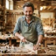
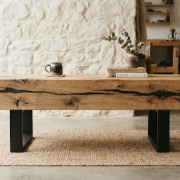
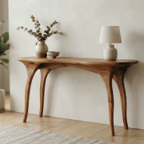
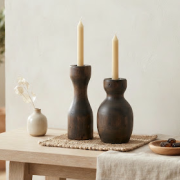

ÉBÉNISTE D'ART & UPCYCLING
Antoine Mercier
Lyon (69) • Atelier La Fuste
Anime 2 ateliers / mois
« Chaque poutre de déconstruction industrielle conserve la mémoire des siècles passés... »
CRÉATIONS SIGNATURES RÉCENTES


